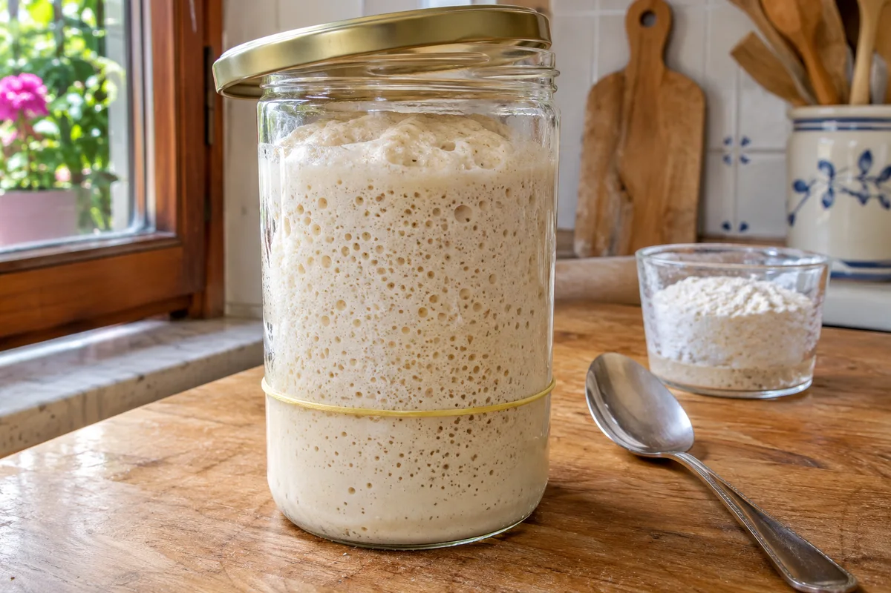

PANE E PIZZA · FASE 1 · VERIFICA 19 NOVEMBRE 2026
LI.CO.LI.: come crearlo da zero e capire quando è maturo
Il LI.CO.LI. è un lievito in coltura liquida: farina e acqua fermentano insieme, senza aggiungere lievito di birra. Lo costruiremo un giorno alla volta, con una bilancia e un barattolo. Il rinfresco ha sempre tre pesi uguali: 50 g di lievito, 50 g di farina e 50 g d'acqua.

Per iniziare: 50 g farina integrale + 50 g acqua = 100 g di miscela.
Per ogni rinfresco: 50 g LI.CO.LI. precedente + 50 g farina tipo 0 + 50 g acqua = 150 g di LI.CO.LI.
La quantità d'acqua è pari alla farina, in peso: si parla di idratazione del 100%. Deve assomigliare a una crema densa, non a un panetto.
1. Prepara tutto in cucina
Servono una bilancia digitale, un cucchiaio, un barattolo pulito a pareti dritte da almeno 750 ml, un elastico e un termometro per ambiente. Procurati farina integrale per il primo giorno, farina di grano tenero tipo 0 per i rinfreschi e acqua potabile a temperatura ambiente, indicativamente 20–25 °C.
Dove tenere il barattolo: su un ripiano stabile, lontano da sole, fornelli e termosifoni. Cerca una temperatura costante di 22–26 °C, misurata accanto al barattolo. Appoggia il coperchio senza serrarlo: deve impedire l'ingresso di polvere, ma lasciare uscire il gas. Pulisci le pareti interne sopra l'impasto.
2. Giorno 1, ore 08:00: comincia
- Metti il barattolo sulla bilancia e premi tara. Versa 50 g di farina integrale, poi aggiungi 50 g di acqua.
- Mescola con il cucchiaio per 1–2 minuti: non devono rimanere sacche di farina asciutta. Otterrai una crema densa che scende lentamente dal cucchiaio. Pulisci le pareti sopra la miscela.
- Metti l'elastico esattamente all'altezza della superficie; appoggia il coperchio senza stringerlo. Tieni il barattolo a 22–26 °C per 24 ore, dalle 08:00 del giorno 1 alle 08:00 del giorno 2.
Perché iniziare con la farina integrale? La farina meno raffinata può aiutare l'avvio della coltura. Dal giorno successivo useremo sempre farina tipo 0: così i rinfreschi restano facili da ripetere e da confrontare.
Se il giorno 2 vedi pochissime bolle, non significa che hai sbagliato. Questo è solo l'inizio: non usare ancora la miscela per il pane.
3. Giorno 2, ore 08:00: primo rinfresco
- Mescola brevemente la miscela del giorno precedente. Metti un barattolo pulito sulla bilancia e azzerala: trasferisci 50 g del composto vecchio. Scarta gli altri 50 g. Non usare gli scarti dei primi giorni nelle ricette.
- Versa 50 g d'acqua nel barattolo con il lievito e mescola per distribuirlo bene.
- Aggiungi 50 g di farina tipo 0. Mescola per 1–2 minuti fino a non vedere grumi asciutti; con una spatola o un cucchiaio pulito raccogli la miscela dalle pareti.
- Hai ottenuto 150 g. Rimetti l'elastico al livello appena raggiunto, appoggia il coperchio e lascia a 22–26 °C per 24 ore, fino alle 08:00 del giorno 3.
4. Calendario dei giorni successivi
Dal terzo giorno rinfresca due volte al giorno, a circa 12 ore di distanza (per esempio alle 08:00 e alle 20:00). È il calendario di riferimento, non una gara a far gonfiare il lievito in pochi giorni.
Se inizi alle 09:00: usa le 09:00 il primo e il secondo giorno; dal terzo giorno, 09:00 e 21:00. Contano le 24 ore iniziali e poi le 12 ore tra i rinfreschi. Se la coltura stenta, prima di cambiare il calendario verifica la temperatura e la farina.
5. Come sapere se puoi usarlo per il pane
Dopo il rinfresco, appiattisci leggermente la superficie, segna il livello con l'elastico e annota l'ora. Mantieni una temperatura costante di 22–26 °C.
Se la miscela occupa 3 cm di altezza in un barattolo a pareti dritte, deve arrivare indicativamente a 6 cm. Il LI.CO.LI. maturo raggiunge il raddoppio in circa 6–8 ore, con molte bolle e un odore gradevolmente acidulo.
Ripeti il controllo in almeno due o tre rinfreschi consecutivi: un solo raddoppio non prova la stabilità. Se non ci riesce, continua a nutrirlo; alcune colture impiegano oltre 7–14 giorni.
Attenzione al falso avvio: nei primi giorni puoi vedere una grande crescita seguita da uno o più giorni in cui il barattolo sembra fermo. È un passaggio possibile nella formazione della coltura, non la prova che il lievito è pronto. Non affidarti neppure alla «prova del galleggiamento» in acqua: non è un criterio attendibile quanto la crescita misurata nel barattolo.
6. Se qualcosa non va: cosa controllare
- Fa bollicine ma non raddoppia
- Le bolle indicano fermentazione, ma la forza lievitante è ancora insufficiente. Mantieni 22–26 °C, usa la stessa farina e continua con i rinfreschi regolari. Non aggiungere lievito di birra, miele o zucchero.
- Cresce, poi scende nel barattolo
- Ha raggiunto il massimo e ha iniziato a perdere gas: è normale. Per valutare il raddoppio, guarda il livello più alto e l'ora in cui lo raggiunge, non solo l'altezza dopo 12 ore.
- C'è uno strato di liquido grigiastro e odora di alcol
- In una coltura già avviata può indicare che il lievito ha consumato il nutrimento. Non è automaticamente muffa: controlla la regolarità dei rinfreschi e se compaiono altri segni anomali. Se non sai distinguere il fenomeno da una contaminazione, per prudenza scarta la coltura.
- Compare muffa, peluria o una macchia rosa/arancione
- Elimina completamente il LI.CO.LI. Non basta togliere la parte colorata. Lava e risciacqua bene il contenitore prima di ricominciare.
7. Quando è maturo: conserva e riattiva
Se lo usi spesso: tienilo a temperatura ambiente e nutrilo con regolarità. Se fai il pane saltuariamente: rinfresca con i soliti 50 g LI.CO.LI. + 50 g farina + 50 g acqua. Lascialo avviare per circa 1–2 ore a temperatura ambiente, poi riponilo in frigorifero intorno a 4 °C, in un barattolo pulito e capiente, con coperchio appoggiato o comunque non sigillato a pressione.
Rinfresca il LI.CO.LI. conservato in frigorifero indicativamente una volta alla settimana. Prima di usarlo, riportalo a temperatura ambiente e ripeti i rinfreschi finché torna a raddoppiare entro 6–8 ore. Le dosi per il pane e per la pizza sono indicate nelle guide successive.
Fonti e limiti della guida
- King Arthur Baking, Sourdough Starter Recipe: crescita, frequenza dei rinfreschi e criterio di attività.
- Colorado State University Extension, Sourdough Starter Best Practices: cura della coltura, igiene e contaminazioni; revisione ottobre 2025.
- King Arthur Baking, Feeding and Maintaining Your Sourdough Starter: rinfreschi da 50 + 50 + 50 g, gestione in frigorifero e riattivazione, aggiornamento novembre 2026.
- King Arthur Baking, Debunking the biggest sourdough myths: limiti della prova del galleggiamento.
I pesi sono quelli concordati per Per Me: 50 + 50 + 50 g. La ricetta di King Arthur utilizza lo stesso rapporto, ma orari e temperatura sono adattati alla cucina domestica. La crescita reale dipende da temperatura, farina e vitalità della coltura. Fonti ricontrollate il 19 novembre 2026; non è stata documentata una prova di laboratorio o una revisione scientifica indipendente di questa specifica ricetta.
Leggi anche: come creare la pasta madre solida
Seconda fase: il pane anche con LI.CO.LI.
Terza fase: pizza alla napoletana con LI.CO.LI.